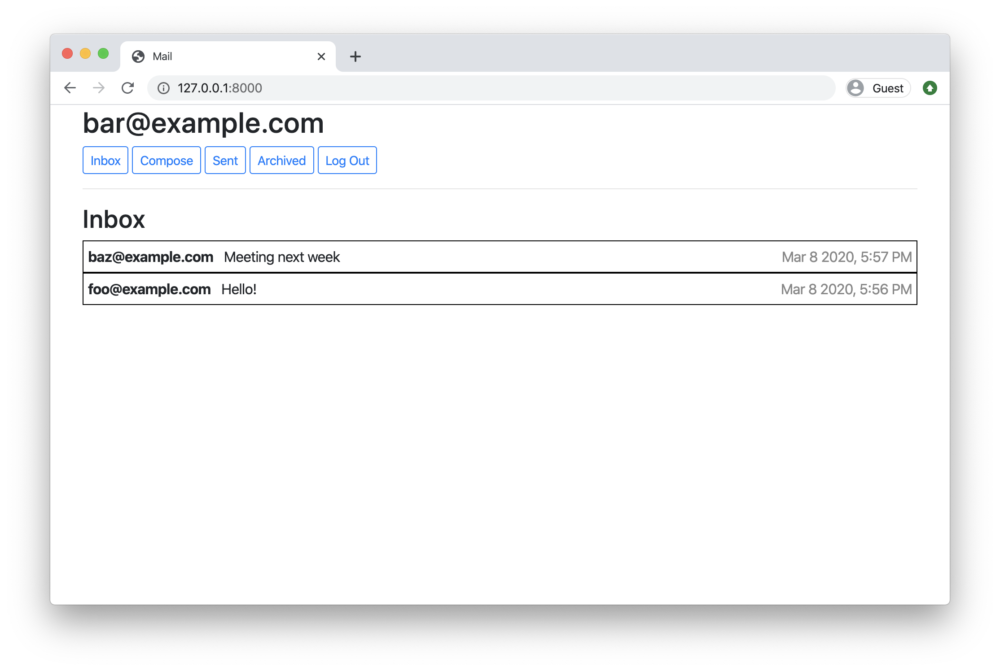
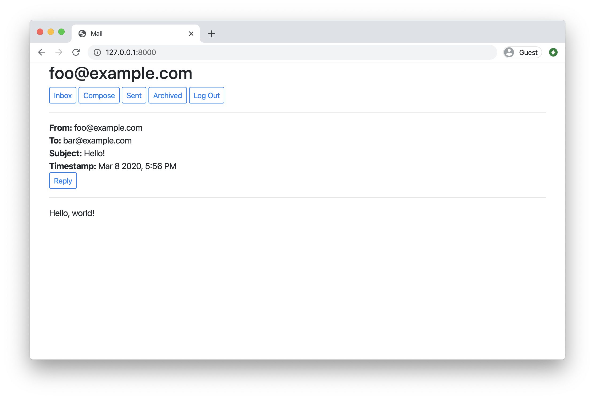

CS50W does not feature a one-to-one correspondence between lectures and projects. If you are attempting this project without having at least watched Lecture 5, you’re trying this too soon!
Design a front-end for an email client that makes API calls to send and receive emails.


Getting Started
- Download the distribution code from https://cdn.cs50.net/web/2020/spring/projects/3/mail.zip and unzip it.
- In your terminal,
cdinto themaildirectory. - Run
python manage.py makemigrations mailto make migrations for themailapp. - Run
python manage.py migrateto apply migrations to your database.
Understanding
In the distribution code is a Django project called project3 that contains a single app called mail.
First, after making and applying migrations for the project, run python manage.py runserver to start the web server. Open the web server in your browser, and use the “Register” link to register for a new account. The emails you’ll be sending and receiving in this project will be entirely stored in your database (they won’t actually be sent to real email servers), so you’re welcome to choose any email address (e.g. foo@example.com) and password you’d like for this project: credentials need not be valid credentials for actual email addresses.
Once you’re signed in, you should see yourself taken to the Inbox page of the mail client, though this page is mostly blank (for now). Click the buttons to navigate to your Sent and Archived mailboxes, and notice how those, too, are currently blank. Click the “Compose” button, and you’ll be taken to a form that will let you compose a new email. Each time you click a button, though, you’re not being taken to a new route or making a new web request: instead, this entire application is just a single page, with JavaScript used to control the user interface. Let’s now take a closer look at the distribution code to see how that works.
Take a look at mail/urls.py and notice that the default route loads an index function in views.py. So let’s open up views.py and look at the index function. Notice that, as long as the user is signed in, this function renders the mail/inbox.html template. Let’s look at that template, stored at mail/templates/mail/inbox.html. You’ll notice that in the body of the page, the user’s email address is first displayed in an h2 element. After that, the page has a sequence of buttons for navigating between various pages of the app. Below that, notice that this page has two main sections, each defined by a div element. The first (with an id of emails-view) contains the content of an email mailbox (initially empty). The second (with an id of compose-view) contains a form where the user can compose a new email. The buttons along the top, then, need to selectively show and hide these views: the compose button, for example, should hide the emails-view and show the compose-view; the inbox button, meanwhile, should hide the compose-view and show the emails-view.
How do they do that? Notice at the bottom of inbox.html, the JavaScript file mail/inbox.js is included. Open that file, stored at mail/static/mail/inbox.js, and take a look. Notice that when the DOM content of the page has been loaded, we attach event listeners to each of the buttons. When the inbox button is clicked, for example, we call the load_mailbox function with the argument 'inbox'; when the compose button is clicked, meanwhile, we call the compose_email function. What do these functions do? The compose_email function first hides the emails-view (by setting its style.display property to none) and shows the compose-view (by setting its style.display property to block). After that, the function takes all of the form input fields (where the user might type in a recipient email address, subject line, and email body) and sets their value to the empty string '' to clear them out. This means that every time you click the “Compose” button, you should be presented with a blank email form: you can test this by typing values into form, switching the view to the Inbox, and then switching back to the Compose view.
Meanwhile, the load_mailbox function first shows the emails-view and hides the compose-view. The load_mailbox function also takes an argument, which will be the name of the mailbox that the user is trying to view. For this project, you’ll design an email client with three mailboxes: an inbox, a sent mailbox of all sent mail, and an archive of emails that were once in the inbox but have since been archived. The argument to load_mailbox, then, will be one of those three values, and the load_mailbox function displays the name of the selected mailbox by updating the innerHTML of the emails-view (after capitalizing the first character). This is why, when you choose a mailbox name in the browser, you see the name of that mailbox (capitalized) appear in the DOM: the load_mailbox function is updating the emails-view to include the appropriate text.
Of course, this application is incomplete. All of the mailboxes simply show the name of the mailbox (Inbox, Sent, Archive) but don’t actually show any emails yet. There’s no view yet to actually see the contents of any email. And the compose form will let you type in the contents of an email, but the button to send the email doesn’t actually do anything. That’s where you come in!
API
You’ll get mail, send mail, and update emails by using this application’s API. We’ve written the entire API for you (and documented it below), so that you can use it in your JavaScript code. (In fact, note that we have written all of the Python code for you for this project. You should be able to complete this project by just writing HTML and JavaScript).
This application supports the following API routes:
GET /emails/<str:mailbox>
Sending a GET request to /emails/<mailbox> where <mailbox> is either inbox, sent, or archive will return back to you (in JSON form) a list of all emails in that mailbox, in reverse chronological order. For example, if you send a GET request to /emails/inbox, you might get a JSON response like the below (representing two emails):
[
{
"id": 100,
"sender": "foo@example.com",
"recipients": ["bar@example.com"],
"subject": "Hello!",
"body": "Hello, world!",
"timestamp": "Jan 2 2020, 12:00 AM",
"read": false,
"archived": false
},
{
"id": 95,
"sender": "baz@example.com",
"recipients": ["bar@example.com"],
"subject": "Meeting Tomorrow",
"body": "What time are we meeting?",
"timestamp": "Jan 1 2020, 12:00 AM",
"read": true,
"archived": false
}
]
Notice that each email specifies its id (a unique identifier), a sender email address, an array of recipients, a string for subject, body, and timestamp, as well as two boolean values indicating whether the email has been read and whether the email has been archived.
How would you get access to such values in JavaScript? Recall that in JavaScript, you can use fetch to make a web request. Therefore, the following JavaScript code
fetch('/emails/inbox')
.then(response => response.json())
.then(emails => {
// Print emails
console.log(emails);
// ... do something else with emails ...
});
would make a GET request to /emails/inbox, convert the resulting response into JSON, and then provide to you the array of emails inside of the variable emails. You can print that value out to the browser’s console using console.log (if you don’t have any emails in your inbox, this will be an empty array), or do something else with that array.
Note also that if you request an invalid mailbox (anything other than inbox, sent, or archive), you’ll instead get back the JSON response {"error": "Invalid mailbox."}.
GET /emails/<int:email_id>
Sending a GET request to /emails/email_id where email_id is an integer id for an email will return a JSON representation of the email, like the below:
{
"id": 100,
"sender": "foo@example.com",
"recipients": ["bar@example.com"],
"subject": "Hello!",
"body": "Hello, world!",
"timestamp": "Jan 2 2020, 12:00 AM",
"read": false,
"archived": false
}
Note that if the email doesn’t exist, or if the user does not have access to the email, the route instead return a 404 Not Found error with a JSON response of {"error": "Email not found."}.
To get email number 100, for example, you might write JavaScript code like
fetch('/emails/100')
.then(response => response.json())
.then(email => {
// Print email
console.log(email);
// ... do something else with email ...
});
POST /emails
So far, we’ve seen how to get emails: either all of the emails in a mailbox, or just a single email. To send an email, you can send a POST request to the /emails route. The route requires three pieces of data to be submitted: a recipients value (a comma-separated string of all users to send an email to), a subject string, and a body string. For example, you could write JavaScript code like
fetch('/emails', {
method: 'POST',
body: JSON.stringify({
recipients: 'baz@example.com',
subject: 'Meeting time',
body: 'How about we meet tomorrow at 3pm?'
})
})
.then(response => response.json())
.then(result => {
// Print result
console.log(result);
});
If the email is sent successfully, the route will respond with a 201 status code and a JSON response of {"message": "Email sent successfully."}.
Note that there must be at least one email recipient: if one isn’t provided, the route will instead respond with a 400 status code and a JSON response of {"error": "At least one recipient required."}. All recipients must also be valid users who have registered on this particular web application: if you try to send an email to baz@example.com but there is no user with that email address, you’ll get a JSON response of {"error": "User with email baz@example.com does not exist."}.
PUT /emails/<int:email_id>
The final route that you’ll need is the ability to mark an email as read/unread or as archived/unarchived. To do so, send a PUT request (instead of a GET) request to /emails/<email_id> where email_id is the id of the email you’re trying to modify. For example, JavaScript code like
fetch('/emails/100', {
method: 'PUT',
body: JSON.stringify({
archived: true
})
})
would mark email number 100 as archived. The body of the PUT request could also be {archived: false} to unarchive the message, and likewise could be either {read: true} or read: false} to mark the email as read or unread, respectively.
Using these four API routes (getting all emails in a mailbox, getting a single email, sending an email, and updating an existing email), you should have all the tools you now need to complete this project!
Specification
Using JavaScript, HTML, and CSS, complete the implementation of your single-page-app email client inside of inbox.js (and not additional or other files; for grading purposes, we’re only going to be considering inbox.js!). You must fulfill the following requirements:
-
Send Mail: When a user submits the email composition form, add JavaScript code to actually send the email.
- You’ll likely want to make a
POSTrequest to/emails, passing in values forrecipients,subject, andbody. - Once the email has been sent, load the user’s sent mailbox.
- You’ll likely want to make a
-
Mailbox: When a user visits their Inbox, Sent mailbox, or Archive, load the appropriate mailbox.
- You’ll likely want to make a
GETrequest to/emails/<mailbox>to request the emails for a particular mailbox. - When a mailbox is visited, the application should first query the API for the latest emails in that mailbox.
- When a mailbox is visited, the name of the mailbox should appear at the top of the page (this part is done for you).
- Each email should then be rendered in its own box (e.g. as a
<div>with a border) that displays who the email is from, what the subject line is, and the timestamp of the email. - If the email is unread, it should appear with a white background. If the email has been read, it should appear with a gray background.
- You’ll likely want to make a
-
View Email: When a user clicks on an email, the user should be taken to a view where they see the content of that email.
- You’ll likely want to make a
GETrequest to/emails/<email_id>to request the email. - Your application should show the email’s sender, recipients, subject, timestamp, and body.
- You’ll likely want to add an additional
divtoinbox.html(in addition toemails-viewandcompose-view) for displaying the email. Be sure to update your code to hide and show the right views when navigation options are clicked. - See the hint in the Hints section about how to add an event listener to an HTML element that you’ve added to the DOM.
- Once the email has been clicked on, you should mark the email as read. Recall that you can send a
PUTrequest to/emails/<email_id>to update whether an email is read or not.
- You’ll likely want to make a
-
Archive and Unarchive: Allow users to archive and unarchive emails that they have received.
- When viewing an Inbox email, the user should be presented with a button that lets them archive the email. When viewing an Archive email, the user should be presented with a button that lets them unarchive the email. This requirement does not apply to emails in the Sent mailbox.
- Recall that you can send a
PUTrequest to/emails/<email_id>to mark an email as archived or unarchived. - Once an email has been archived or unarchived, load the user’s inbox.
-
Reply: Allow users to reply to an email.
- When viewing an email, the user should be presented with a “Reply” button that lets them reply to the email.
- When the user clicks the “Reply” button, they should be taken to the email composition form.
- Pre-fill the composition form with the
recipientfield set to whoever sent the original email. - Pre-fill the
subjectline. If the original email had a subject line offoo, the new subject line should beRe: foo. (If the subject line already begins withRe:, no need to add it again.) - Pre-fill the
bodyof the email with a line like"On Jan 1 2020, 12:00 AM foo@example.com wrote:"followed by the original text of the email.
Hints
- To create an HTML element and add an event handler to it, you can use JavaScript code like the below:
const element = document.createElement('div');
element.innerHTML = 'This is the content of the div.';
element.addEventListener('click', function() {
console.log('This element has been clicked!')
});
document.querySelector('#container').append(element);
This code creates a new div element, sets its innerHTML, adds an event handler to run a particular function when that div is clicked on, and then adds it to an HTML element whose id is container (this code assumes that there is a HTML element whose id is container: you’ll likely want to change the argument to querySelector to be whichever element you’d like to add an element to).
- You may find it helpful to edit
mail/static/mail/styles.cssto add any CSS you need for the application. - Recall that if you have a JavaScript array, you can loop over each element of that array using
forEach. - Recall that normally, for
POSTandPUTrequests, Django requires a CSRF token to guard against potential cross-site request forgery attacks. For this project, we’ve intentionally made the API routes CSRF-exempt, so you won’t need a token. In a real-world project, though, always best to guard against such potential vulnerabilities!
How to Submit
- Visit this link, log in with your GitHub account, and click Authorize cs50. Then, check the box indicating that you’d like to grant course staff access to your submissions, and click Join course.
-
Install Git and, optionally, install
submit50.
When you submit your project, the contents of your web50/projects/2020/x/mail branch should match the file structure of the unzipped distribution code as originally received. That is to say, your files should not be nested inside of any other directories of your own creation. Your branch should also not contain any code from any other projects, only this one. Failure to adhere to this file structure will likely result in your submission being rejected.
By way of example, for this project that means that if the grading staff visits https://github.com/me50/USERNAME/tree/web50/projects/2020/x/mail (where USERNAME is your own GitHub username as provided in the form, below) we should see the two subdirectories (mail, project3) and the manage.py file. If that’s not how your code is organized when you check, reorganize your repository needed to match this paradigm.
- If you’ve installed
submit50, executesubmit50 web50/projects/2020/x/mailOtherwise, using Git, push your work to
https://github.com/me50/USERNAME.git, whereUSERNAMEis your GitHub username, on a branch calledweb50/projects/2020/x/mail. -
Record a screencast, not to exceed 5 minutes in length in which you demonstrate your web app’s functionality. Upload that video to YouTube (as unlisted or public, but not private). This video’s requirements are:
- It is not a YouTube “short”.
- The video begins with a slide or text overlay containing both your edX and GitHub usernames.
- It must show your web app live and in action. Do not use this video to walk us through any code.
- It demonstrates that all five (5) items of the specification have been implemented.
- The video description has been timestamped at the (first) point where your video demonstrates each of the above-referenced implementations.
- The video has been uploaded less than one month from the time of your submission of the form for this project (the final step below).
- Submit this form.
You can then go to https://cs50.me/cs50w to view your current progress!
On 6 January 2026, the course’s Gradebook performed its annual “reset”. Your past progress is not automatically lost, however, so do not instinctively resubmit this assignment if you have already earned a passing grade on it. Please read cs50.harvard.edu/web/faqs/#i-completed-an-assignment-or-this-course-in-a-prior-year-why-does-my-gradebook-no-longer-show-my-prior-progress for more information.
If your course is incomplete at the time of the gradebook reset, not to worry. Simply continue where you left off, and your older scores will import once any newly-submitted work is graded in 2026!